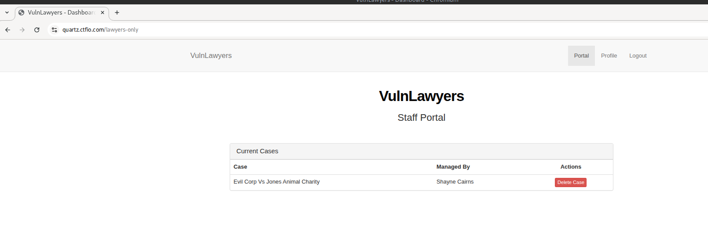

CouldBeYourCompanyHere
VulnLawyers
Penetration Test Report
Test Date: July 2025
Principal Tester: Noah ****
Table of Contents
- Confidentiality Notice
- Executive Summary
- Engagement Overview
- Limitations
- Testing Methodology
- Findings
- Remediation Roadmap & Compliance Mapping
- Technical Attack Path Breakdown
- Technical Remediation
- C-01 | Passwords Stored in Plaintext
- C-02 | Insecure Direct Object Reference (IDOR)
- H-01 | Weak Authentication and Brute-Force Vulnerability
- M-01 | Information disclosure via Fuzzing
- M-02 | Information Disclosure via Redirect Body
- L-01 & L-02 & L-03 | Outdated Components
- I-01 | UI Misrepresentation - Purported Deletion of Case Files
- I-02 | Informational: Inconsistent Nginx Versioning in Header Leak
- Appendices
Confidentiality Notice
This report contains sensitive information pertaining to the security posture, vulnerabilities, and infrastructure of the assessed environment. It is intended solely for the use of the client and designated stakeholders.
Unauthorized access, reproduction, distribution, or disclosure of this document or any of its contents is strictly prohibited without explicit written consent from the commissioning organization and the testing entity.
All findings, data, and recommendations contained herein must be handled in accordance with applicable information security and data protection policies. Misuse or negligent handling of this report could expose the organization to significant legal, reputational, or operational risk.
Executive Summary
Between 10 July 2025 and 20 July 2025, CouldBeYourCompanyName performed an external, black-box web-application penetration test for VulnLawyers. The recommendations provided in this report are structured to facilitate remediation of the identified security risks. This document serves as a formal letter of attestation for the recent VulnLawyers company black-box penetration test.
Evaluation ratings are based on a comparison between findings from the engagement and recognized security industry standards. This document reflects our considered assessment of VulnLawyers' current security posture, specifically as it pertains to the network perimeter. The full evaluation rubric used for this determination can be found in Appendix A.
It is recommend to review the Findings section for a better understanding of risks and security issues discovered.
| Scope | Evaluation | Grade |
|---|---|---|
| Web Application Perimeter | Unsatisfactory | F |
Testing identified ten vulnerabilities, of these there were three key vulnerabilities ranging from Critical to High severity:
- Critical (Plaintext Password Storage): Passwords found stored in plaintext enabled account takeover of every user account on the web application.
- Critical (IDOR): Direct access to profile details for accounts other than the one authenticated was permitted.
- High (Brute-force): Lack of rate limiting enabled automated password guessing and unauthorized access.
Successful exploitation demonstrated the possibility of: unauthorized access to privileged legal data, deletion or tampering of case files, and exposure of client PII—creating significant business, reputational, and potential regulatory risk.
Immediate remediation of the Critical and High findings is strongly advised. A detailed, prioritised roadmap is provided within the report. Re-testing is recommended within 30 days of patching to confirm that controls are effective.
Engagement Overview
This assessment was conducted as a black-box web application test targeting VulnLawyers' externally-accessible systems. The primary objective was to identify security weaknesses that could be exploited by an unauthenticated attacker, with emphasis on evaluating authentication, access controls, session management, and vulnerabilities outlined in the OWASP Top 10. Testing was performed using a combination of manual techniques and automated tooling, in line with industry best practices. Where applicable, business logic issues were also analyzed to assess the application's resilience to misuse. All findings are accompanied by actionable remediation guidance to assist in mitigating the identified risks.
Limitations
This assessment was conducted under a defined scope and with explicit constraints provided prior to testing. Infrastructure-level testing, including backend server enumeration, network-layer probing, and denial-of-service attempts, was explicitly out of scope. As a result, findings related to system configuration or patch management are based solely on passively observed indicators and have not been validated through direct testing.
Additionally, the evaluation was performed from the perspective of an unauthenticated external actor unless otherwise noted. No persistent access, source code review, or social engineering techniques were employed. The findings presented herein reflect the application's state only during the assessment window and may not account for subsequent changes or time-based exposure.
Testing Methodology
The assessment was performed using the following approach:
- Reconnaissance: Open-source intelligence gathering, DNS/brute enumeration.
- Mapping: Manual and automated discovery of application pages and endpoints.
- Vulnerability Analysis: Testing for OWASP Top 10 vulnerabilities and misconfigurations.
- Exploitation: Safe proof-of-concept validation of identified vulnerabilities.
- Reporting: Documentation of all findings and recommendations with supporting evidence.
Findings
This section will give a high level overview of the findings, specific technical remediations will be found in that section. The findings in this section are evaluated based on the risk rating matrix found in Appendix B.
⚠️ C-01 | Critical: Passwords Stored in Plaintext
Finding ID: C-01
Impact: Full compromise of all user accounts if attacker gains access to API responses or internal storage; enables credential reuse attacks across platforms.
Evidence: Passwords are returned in cleartext within API responses during profile detail queries (e.g., IDOR vulnerability), exposing them to any user able to access that endpoint.
Recommendation: Immediately implement secure password hashing (e.g., bcrypt or Argon2). Ensure no plaintext credentials are stored or returned by the application, and enforce a global password reset post-remediation.
⚠️ C-02 | Critical: IDOR - Direct Access to Another User's Profile Details
Finding ID: C-02
Impact: Complete web application compromise by accessing all user credentials.
Evidence: Authenticated request to
/lawyers-only-profile-details/2 returned Shayne
Cairns's password (q2V944…).
Recommendation: Enforce server-side authorization: ensure users can only access their own data, and never expose passwords or sensitive data.
H-01 | High: Credential Brute-Force on Login Function
Finding ID: H-02
Impact: Full account takeover of lawyer accounts.
Evidence: Valid credentials discovered:
jaskaran.lowe@vulnlawyers.ctf:summer via brute force
Recommendation: Implement rate-limiting, MFA, and enforce stronger password policies.
M-01 | Medium: Information Disclosure via Fuzzing
Finding ID: M-01
Impact: Attackers can map app structure and harvest preliminary data.
Evidence: Subdomain discovered via ffuf, data.quartz.ctfio.com
Recommendation: Serve authentication barriers early (HTTP 401/403), and sanitize public app footprint.
M-02 | Medium: Information Disclosure via Redirect Body
Finding ID: M-02
Impact: Attackers can map app structure and harvest preliminary data.
Evidence: 302 response from /login leaks the
/lawyers-only page.
Recommendation: Remove the body and retire the old route.
L-01 | Low: Use of Outdated Software Component - Nginx
Finding ID: L-01
Impact: The use of outdated software introduces latent vulnerabilities that may become exploitable if site functionality expands or if attackers chain weaknesses together. Nginx 1.22.0 is vulnerable to CVE-2022-41741, CVE-2022-41742, among others.
Evidence: Wappalyzer identified Nginx v1.22.0, this information is also available in HTTP response headers.
Recommendation: Upgrade major components to their latest secure versions. Establish a regular dependency review and patch lifecycle process for both frontend and backend components.
L-02 | Low: Use of Outdated Software Component - jQuery
Finding ID: L-02
Impact: The use of outdated software introduces latent vulnerabilities that may become exploitable if site functionality expands or if attackers chain weaknesses together. jQuery v1.12.4 contains known cross site scripting (XSS) vulnerabilities.
Evidence: Wappalyzer identified jQuery v1.12.4, this information is also available by using
the browser JavaScript console and running the command jQuery.fn.jquery.
Recommendation: Upgrade major components to their latest secure versions. Establish a regular dependency review and patch lifecycle process for both frontend and backend components.
L-03 | Low: Use of Outdated Software Component - Bootstrap
Finding ID: L-03
Impact: The use of outdated software introduces latent vulnerabilities that may become exploitable if site functionality expands or if attackers chain weaknesses together. Bootstrap v3.3.7 is deprecated with several historic UI-based flaws.
Evidence: Wappalyzer identified Bootstrap v 3.3.7, this information is also available by
using
the browser JavaScript console and running the command $.fn.tooltip.Constructor.VERSION.
Recommendation: Upgrade major components to their latest secure versions. Establish a regular dependency review and patch lifecycle process for both frontend and backend components.
I-01 | Low: UI Misrepresentation - Purported Deletion of Case Files
Finding ID: I-01
Impact: Misleading user interface behavior creates the impression that sensitive data is deleted when it is not. This undermines user trust and could lead to inappropriate case handling decisions.
Evidence: When logged in as Shayne Cairns, pressing the “Delete Case” button causes the case to disappear from Shayne's view, upon leaving the page and coming back the case returns.
Recommendation: Ensure that all destructive actions, including case deletions, are handled at the backend level with verifiable state changes. All user-facing features must reflect the true state of the underlying data.
I-02 | Informational: Inconsistent Nginx Versioning in Header Leak
Finding ID: I-02
Impact: Version disclosure may enable targeted exploits against known vulnerabilities in Nginx 1.18.0 (e.g., CVE-2021-23017 - 1-byte memory overwrite).
Evidence: GET request to the /images directory results in a 301 and 403
response leaking Nginx version in the footer.
Recommendation: Our tenative recommendation is to set server_tokens off; in all Nginx blocks to suppress version disclosure in headers and bodies. Please review the technical remediation section for a better understanding.
Remediation Roadmap & Compliance Mapping
| Finding | Priority | Estimated Effort | Target Fix Window | Key Compliance Drivers* |
|---|---|---|---|---|
| C-01: Passwords Stored in Plaintext | Critical | Medium | ≤ 14 days | OWASP A07-2021, GDPR (Art. 32), NIST 800-53 IA-5(1), ISO 27001 A.10.1 |
| C-02: IDOR - Profile Credential Disclosure | Critical | Medium | ≤ 14 days | OWASP A01 -2021, GDPR (Art. 32), ISO 27001 A.9.4.1, NIST 800-53 AC-6 |
| H-01: Weak Login / Brute-Force Vulnerability | High | Low - Medium | ≤ 30 days | OWASP A07 -2021, ISO 27001 A.9.4.2, NIST 800-53 AC-7, PCI DSS v4.0 8.3.6, Cyber Essentials |
| M-01, M-02: Information Disclosure | Medium | Low | ≤ 60 days | OWASP A06-2021, ISO 27001 A.13.1.1, CIS Controls 3.4 |
| L-01, L-02, L-03: Use of Outdated Software Components |
Low | Low | ≤ 90 days | OWASP A06-2021, ISO 27001 A.12.6.1, UK GDPR (Art. 32), NCSC Cyber Essentials |
*Compliance references are provided for context; VulnLawyers should map recommendations against their own regulatory obligations. No mappings were made for findings rated Informational. All references are links.
Technical Attack Path Breakdown
The following section tracks the path taken by the tester to uncover the identified vulnerabilities. A complete list of tools and wordlists used during this assessment is provided in Appendix C.
The tester began with directory and subdomain enumeration using ffuf. While ffuf
automatically performs recursive directory fuzzing, discovering a new subdomain requires initiating a new scan
scoped to that domain. Note: Although the screenshots show use of the -e flag (for file extensions),
it was not required for this particular case.
</> ffuf -H 'Host: FUZZ.quartz.ctfio.com' -u https://quartz.ctfio.com -w <Path to Wordlist> -fs 178
</> ffuf -u https://quartz.ctfio.com/FUZZ -w <Path to Wordlist> -fs 178
</> ffuf -u https://data.quartz.ctfio.com/FUZZ -w <Path to Wordlist> -fs 178
After completing the scans, we navigated to the interesting endpoint data.quartz.ctfio.com/users and
discovered a JSON list of valid usernames.
Armed with a list of usernames, we attempted to access the login page discovered earlier. However, we encountered
a redirect and an “Access Denied” message. Inspecting the raw HTTP response revealed a new endpoint at
/lawyers-only/.
At the new login screen, we captured a request containing a username and password and used Caido's Automate feature to perform a password spraying attack.
We successfully authenticated using the credentials:
jaskaran.lowe@vulnlawyers.ctf:summer
Next, we navigated to the profile update page and intercepted the request when modifying account data. We observed that profile details are retrieved via an endpoint containing the user ID.
We visited this endpoint directly to confirm it was accessible externally.
Since the endpoint did not enforce access controls, we manually modified the ID value to test access to other users' profiles.
With full visibility into other user profiles, we obtained credentials for all accounts. Notably, Shayne's account was identified as the manager of a sensitive case file.
Finally, we used Shayne's account to delete the referenced case file, discovering an implementation flaw.

Technical Remediation
The following technical remediations are recommended to address the vulnerabilities identified during the assessment. Each recommendation is designed to not only resolve the immediate issue but also to promote long-term security hygiene through defensive development practices, access control enforcement, and architectural improvements. All application level examples
C-01 | Passwords Stored in Plaintext
To ensure the confidentiality and integrity of user credentials, passwords must never be stored or transmitted in plaintext. The current practice represents a severe violation of industry best practices and creates significant risk in the event of database compromise, insider access, or accidental data exposure.
Passwords must be hashed using a strong, adaptive one-way hashing function such as bcrypt, scrypt, or Argon2id. These algorithms are specifically designed to resist brute-force and dictionary attacks by increasing computational effort through configurable cost parameters.
</> Example: Secure Hashing
from flask import Flask, request, jsonify
import bcrypt
@app.route('/register', methods=['POST'])
def register():
data = request.json
username = data.get("username")
password = data.get("password")
if not username or not password:
return jsonify({"error": "Missing username or password"}), 400
salt = bcrypt.gensalt(rounds=12) ### <-- This is the configurable cost parameter.
hashed = bcrypt.hashpw(password.encode('utf-8'), salt)
users[username] = hashed
return jsonify({"message": f"User {username} registered successfully."}), 201
@app.route('/lawyers-only-login', methods=['POST'])
def login():
data = request.json
username = data.get("username")
password = data.get("password")
stored_hash = users.get(username)
if not stored_hash:
return jsonify({"error": "Invalid credentials"}), 401
if bcrypt.checkpw(password.encode('utf-8'), stored_hash):
return jsonify({"message": "Login successful"}), 200
else:
return jsonify({"error": "Invalid credentials"}), 401
Plaintext credentials currently in the database must be invalidated. Users should be prompted to reset their passwords through a secure password reset flow. Do not attempt to retroactively hash existing plaintext passwords, as this assumes compromise has not already occurred.
</> Example: Password Reset Flow
from itsdangerous import URLSafeTimedSerializer
from flask_mail import Message
def send_password_reset_email(user_email):
user = User.query.filter_by(email=user_email).first()
if not user:
return
serializer = URLSafeTimedSerializer(app.config['SECRET_KEY'])
token = serializer.dumps(user.email, salt='password-reset')
reset_url = url_for('reset_password', token=token, _external=True)
msg = Message("Password Reset", recipients=[user.email])
msg.body = f"Click to reset your password: {reset_url}"
mail.send(msg)
@app.route('/reset/<token>', methods=['GET', 'POST'])
def reset_password(token):
serializer = URLSafeTimedSerializer(app.config['SECRET_KEY'])
try:
email = serializer.loads(token, salt='password-reset', max_age=3600)
except SignatureExpired:
return "Token expired", 403
except BadSignature:
return "Invalid token", 403
if request.method == 'POST':
new_password = request.form['password']
user = User.query.filter_by(email=email).first()
user.set_password(new_password)
db.session.commit()
return redirect(url_for('login'))
return render_template('reset_password_form.html', token=token)
Sensitive data such as passwords must also be excluded from all application responses and log files. APIs returning user account details must be audited to ensure no sensitive fields are included, even for authenticated users.
Access to password hashes (even if secure) should be restricted to the authentication subsystem only. Ensure logs, backups, and support tooling do not inadvertently leak these values.
Security mechanisms should be in place to ensure that any future code handling credentials enforces secure practices, such as:
- Linting or static analysis rules that prevent logging or returning password fields
- Developer code reviews with explicit attention to credential handling
- Test coverage for registration and login flows validating that no raw passwords are stored or echoed
These changes are foundational to any secure authentication system and are necessary for compliance with GDPR (Art. 32), ISO 27001 Annex A.9, and OWASP recommendations.
</> Example: Validation Check
curl -s https://quartz.ctfio.com/profile-details/6 | jq '.password'
C-02 | Insecure Direct Object Reference (IDOR)
To prevent unauthorized access to user credentials or other sensitive data through predictable URL parameters,
the application should enforce object-level access control on all endpoints. User identifiers exposed in URLs
(e.g., /profile-details/2) should be replaced with opaque references or UUIDs to prevent enumeration.
Additionally, sensitive information such as passwords must never be included in API responses, even when the
requesting user is authenticated.
Access control logic should be implemented server-side using authenticated session context, ensuring that users may only retrieve, modify, or delete resources they explicitly own. This validation must occur for every request and should not rely on UI constraints alone.
</> Example: Flask route with object-level access control using session context
from flask import session, abort
@app.route('/lawyers-only-profile-details/<int:user_id>')
def get_profile(user_id):
current_user_id = session.get('user_id')
if user_id != current_user_id:
abort(403)
user = db.get_user_by_id(user_id)
return jsonify(user.to_safe_dict())
H-01 | Weak Authentication and Brute-Force Vulnerability
To mitigate brute-force and password spraying risks, the login functionality must incorporate robust anti-automation controls. Rate-limiting should be applied on a per-IP and per-username basis to throttle repeated login attempts. This can be achieved at the web server level (e.g., Nginx limit_req) or within the application itself.
Additionally, the application should enforce stronger password policies (e.g., minimum 12 characters, alphanumeric and special characters), support multi-factor authentication (MFA), and implement account lockout or delay mechanisms after repeated failed logins. All failed authentication attempts should be logged and reviewed regularly.
</> Example: Rate-limiting in Nginx config
limit_req_zone $binary_remote_addr zone=auth_limit:10m rate=5r/m;
server {
location /login {
limit_req zone=auth_limit burst=10 nodelay;
proxy_pass http://backend;
}
}
</> Example: Validation Check
for i in {1..10}; do curl -s -X POST https://quartz.ctfio.com/lawyers-only-login -d "user=test&pass=wrong" > /dev/null; done
curl -s -X POST https://quartz.ctfio.com/lawyers-only-login -d "user=test&pass=wrong" | grep -i 'too many attempts'
M-01 | Information disclosure via Fuzzing
To prevent attackers from discovering hidden subdomains or application instances through fuzzing, the server configuration should be hardened to reject unknown Host headers. All virtual hosts should be explicitly declared in the web server configuration, and a default catch-all server block should return an error (e.g., HTTP 444) or redirect to a generic error page.
</> Example: Nginx config
server {
listen 80 default_server;
server_name _;
return 444;
}
server {
listen 80;
server_name quartz.ctfio.com;
root /var/www/quartz;
index index.html;
if ($host !~ ^(quartz\.ctfio\.com)$) {
return 444;
}
}
In addition, internal or staging environments should be protected via network-level access control, such as IP allowlisting or VPN-only access, and should not be accessible from the public internet. DNS records should be reviewed to ensure that only legitimate and necessary subdomains are publicly resolvable.
M-02 | Information Disclosure via Redirect Body
Some web servers may include the original response body in HTTP 30x redirects, which can inadvertently leak internal information such as error messages, stack traces, or unauthenticated views. This behavior is especially problematic when the body content contains sensitive information and is delivered to unauthenticated or unintended clients before redirection completes.
To prevent such disclosures, the application and underlying web server should be configured to avoid rendering bodies on redirection responses, particularly those involving 302 (Found) and 307 (Temporary Redirect) status codes. In Nginx, this can be achieved by issuing return directives instead of using rewrite ... redirect, or by stripping response bodies manually using the empty_gif module or custom headers where applicable.
</> Example: Nginx config
location /login {
if ($unauthorized) {
return 302 https://quartz.ctfio.com/denied;
}
proxy_pass http://quartz.ctfio.com/lawyers-only;
}
</> Example: Application level
@app.route('/login', methods=['POST'])
def login():
if not authorized():
return redirect("/denied", code=302)
return render_template("dashboard.html")
Additionally, review all authentication-related routes to ensure that redirects are performed early in the request pipeline, before any content is generated. If application logic must generate content conditionally, guard those blocks behind strict authentication checks.
This mitigation ensures attackers cannot extract sensitive clues during redirect behavior and aligns with secure-by-default design principles.
</> Example: Validation Check
curl -i -k -X GET https://quartz.ctfio.com/login --max-redirs 0
L-01 & L-02 & L-03 | Outdated Components
The use of outdated and vulnerable software components introduces unnecessary risk. While the current deployment may be minimal in functionality, it remains susceptible to exploitation via known vulnerabilities in its core dependencies.
Nginx 1.22.0: This version is vulnerable to several known issues (e.g., CVE-2025-23419, CVE-2022-41741, CVE-2022-41742). Upgrade to Nginx 1.26.3 or higher to address these issues. Testing should be conducted to ensure compatibility with custom modules and configurations.
jQuery 1.12.4: This version contains multiple XSS and DOM-related vulnerabilities. Upgrade to jQuery 3.7.1 or higher, and refactor deprecated API usage to ensure compatibility.
Bootstrap 3.3.7: This version relies on jQuery and is no longer maintained. Migrate to Bootstrap 5.x, which provides native JavaScript implementations and improved XSS protections. If full migration is not feasible, implement strict CSP headers and sanitize all user-provided content with a trusted library such as DOMPurify.
Maintaining an up-to-date dependency chain is essential for defense-in-depth and long-term maintainability of the application.
I-01 | UI Misrepresentation - Purported Deletion of Case Files
The application should accurately represent the outcome of user actions. In the current implementation, the “Delete Case” button appears to remove a legal case, but the data is not actually deleted from the backend or hidden from other users. This misrepresentation can mislead users into believing data has been irreversibly removed.
If deletion functionality is intended, implement the deletion logic on the server side. This should include a request handler that validates the user's permissions and securely updates the shared datastore to reflect the change (e.g., soft-delete the case).
If true deletion is not desired, the frontend should be updated to reflect that the action is only a local or session-level hiding mechanism, not a persistent removal. Ensure the UI communicates this clearly to avoid confusion.
Regardless of the approach, actions related to case management should be logged with:
- User ID
- Timestamp
- IP Address
- Record affected
- Reason (if provided)
</> Example: Python Implementation
from flask import request, session, abort
from datetime import datetime
@app.route('/case/<int:case_id>/delete', methods=['POST'])
def soft_delete_case(case_id):
case = db.get_case(case_id)
current_user_id = session.get('user_id')
if not case or case.owner_id != current_user_id:
abort(403)
reason = request.form.get("reason", "N/A")
client_ip = request.headers.get('X-Forwarded-For', request.remote_addr)
case.status = "deleted"
db.commit()
db.insert_audit_log({
"event": "case_delete",
"user_id": current_user_id,
"timestamp": datetime.utcnow().isoformat(),
"ip_address": client_ip,
"record_id": case_id,
"reason": reason
})
return jsonify({"status": "marked as deleted"})
</> Example: Modal Delete Confirmation
<Modal>
<h3>Confirm Case Deletion
<p>Type DELETE to confirm.
<input onChange={...} />
</Modal>
</> Example: Validation Check
curl -X POST -b shayne_cookie.txt https://quartz.ctfio.com/lawyers-only \
-H "X-Reason: Test" -H "X-User-ID: 2" -d "action=delete" #inspect audit log after
curl -X POST -b not_shayne_cookie.txt https://quartz.ctfio.com/lawyers-only \
-H "X-Reason: Test" -H "X-User-ID: 420" -d"action=delete" \
| grep -q '403' && echo "RBAC Working"
These controls ensure that the application's behavior aligns with legal and business expectations for traceability, accountability, and risk mitigation even when actions are taken by authorized users.
I-02 | Inconsistent Nginx Versioning in Header Leak
While no direct vulnerability was confirmed due to the scope limitation prohibiting infrastructure testing, the exposure of inconsistent Nginx version numbers across HTTP responses may indicate proxy misconfiguration or layered reverse proxy setups that inadvertently leak upstream details. In this case, the presence of both nginx/1.22.0 and nginx/1.18.0 in same response increases uncertainty around patch levels and complicates forensic response in the event of an incident.
To remediate this configure Nginx to avoid disclosing the version string by setting
server_tokens off; in both the main nginx.conf and any relevant site-specific configuration files.
If a proxy is returning a different Nginx version, ensure it is also configured to suppress headers, or consider
normalizing the response headers with proxy_hide_header Server; and explicitly setting a generic
add_header Server directive.
</> Example: Nginx config
http {
server_tokens off;
proxy_hide_header Server;
add_header Server "Secure" always;
}
Review all Nginx or proxy configurations in the request chain to ensure version alignment and confirm that no outdated nodes are present behind the frontend server.
Although this finding was rated Informational, addressing it is a low-effort, high-clarity measure that supports operational hygiene and minimizes unnecessary information disclosure to external parties.
</> Example: Verification Check
curl -s -D - https://quartz.ctfio.com -o /dev/null | grep -i ^Server | grep -Eq 'nginx|Ubuntu' && echo "Not Remediated" || echo "Remediated"
Appendix A
Overall Evaluation Matrix
| Grade | Rating | Criteria Description |
|---|---|---|
| A | Excellent | Security posture exceeds industry standards across key domains. Only a few low-risk items were observed, indicating strong governance and proactive oversight. |
| B | Good | Security posture meets most industry standards. A limited number of moderate-risk findings were noted, but core controls remain sound and effective. |
| C | Adequate | Security posture satisfies minimum expectations, though gaps in consistency across controls were observed. Improvements are recommended to reduce exposure. |
| D | Marginal | Security posture falls below acceptable thresholds in several areas. High-risk issues or control deficiencies require prompt remediation to avoid operational risk. |
| F | Unsatisfactory | Security posture does not meet baseline standards. Critical vulnerabilities or systemic failures pose substantial risk to confidentiality, integrity, and availability. |
Appendix B
Risk Rating Matrix
| Risk Level | Description | Action Required |
|---|---|---|
| Critical | Immediate system compromise likely | Immediate remediation |
| High | Major impact, easily exploitable | Remediate as soon as possible |
| Medium | Moderate impact or requires user interaction | Fix in standard patch cycle |
| Low | Minor impact or low likelihood | Fix when feasible |
| Informational | No immediate risk | Optional review |
Appendix C
Tools Used
| Tool | Description |
|---|---|
 Caido Caido |
Intercepting and manipulating HTTP requests |
| Wappalyzer | Identification of web technologies |
| Ffuf | Directory and subdomain discovery |
| Command line request manipulation | |
| 📝 Wordlists | https://app.hackinghub.io/wordlists.zip |
Appendix D
Engagement Points of Contact
| Name | Position | Company | Phone Number | |
|---|---|---|---|---|
| Noah **** | Principal Penetration Tester | CouldBeYourCompanyHere | noah*****@fake.com | 123-456-7890 |
| Shayne Cairns | Manager | VulnLawyers | shayne.cairns@vulnlawyers.ctf | 987-654-3210 |